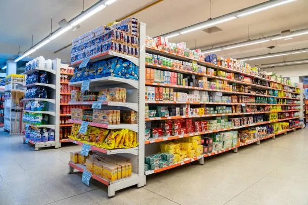

In this project, I conducted Exploratory Data Analysis (EDA) and hypothesis testing on customer shopping behavior to uncover insights into the factors influencing purchasing decisions and to identify key trends in customer behavior.
Tool Used: Python

In this project, I developed a binomial logistic regression model to predict bank loan defaults. The analysis involved data preprocessing, followed by model training and evaluation to assess the model's accuracy and other performance metrics.
Tool Used: Python

In this project, I cleaned a dataset containing details of movies from IMDB database. The messy dataset is transformed into a clean, organized one through a step-by-step data cleaning process. Tasks include handling duplicate data, addressing missing values, standalizing data types,fixing incorrect values and inconsistencies.
Tool Used: SQL
In this project, I performed analysis on a charity donation datasets to derive insights for the fundraising strategy.
Tool Used: SQL and Tableau
In this project, I analyzed customer churn data for an e-commerce company to identify key factors influencing customer retention.
Tool Used: Microsoft Excel

In this project, I created a sales dashboard for a superstore to analyze and visualize sales data. The dashboard highlights key performance indicators and sales trends, providing insights into revenue growth opportunities.
Tool Used: Tableau